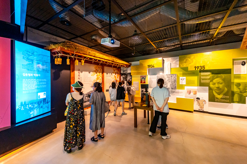
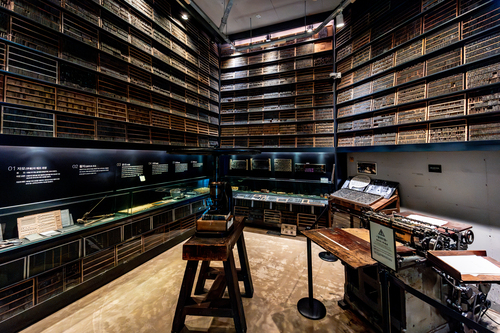
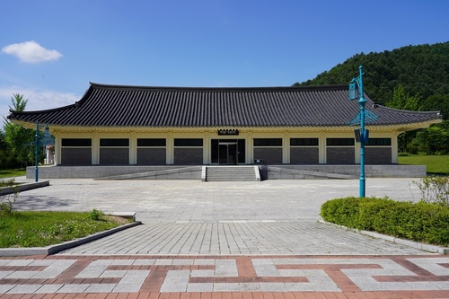
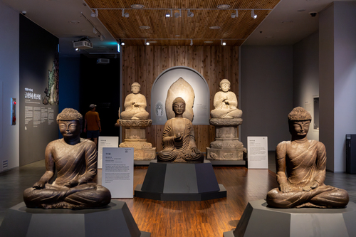

고즈넉한 인문학여행!
당일코스 여행지 6개소여행코스 설명
춘천은 아름다운 자연경관뿐만 아니라 깊은 인문학적 매력을 품고 있는 도시입니다. 이번 여행 코스는 김유정문학촌, 의암류인석기념관 그리고 다양한 박물관을 하루 동안 탐방하며 춘천의 문학과 역사를 깊이 느낄 수 있는 인문학 테마로 구성했습니다
여행코스 안내
1코스
- 1 김유정문학촌
- 2 책과 인쇄박물관
- 3 의암류인석기념관
2코스
- 1 국립춘천박물관
- 2 이상원미술관
- 3 춘천막국수체험박물관


김유정문학촌
1일차 1코스김유정문학촌은 봄봄, 동백꽃, 금 따는 콩밭 등 우리나라 근대 단편 문학에 있어 빼놓을 수 없는 작가 김유정의 흔적을 만날 수 있는 마을이다. 강원특별자치도 춘천시 실레마을은 김유정의 고향으로 이곳에 조성된 김유정문학촌은 김유정의 생가를 복원하고 전시관을 마련하여 김유정의 생애와 작품세계를 기리고 있다.
- 주소 강원특별자치도 춘천시 실레길 25
- 소요시간 40분
-
이용시간
09:30 ~ 18:00
동절기 09:30 ~ 17:00 - 문의 및 안내 033-261-4650
- 홈페이지 http://www.kimyoujeong.org/

책과인쇄박물관
1일차 2코스책과 인쇄박물관은 강원특별자치도 춘천에 있는 활자 인쇄의 모든 자료가 전시된 박물관이다. 세계에서 가장 앞섰던 우리의 책과 인쇄문화의 소중함을 알리기 위해 책과 인쇄를 깊이 이해하고자 설립됐다. 박물관 건물은 앞에서 보면 여러 크기의 책들이 책장에 꽂혀 있는 모습이고, 위에서 보면 고이 접은 쪽지 편지의 모양을 하고 있다. 책과 인쇄박물관의 건축물은 '그리움이 쌓여 시(時)가 된 박물관'이라는 부제를 가지고 있다.
- 주소 강원특별자치도 춘천시 신동면 풍류1길 156
- 소요시간 60분
- 이용시간 09:00~18:00
- 문의 및 안내 033-264-9923
- 홈페이지 http://www.mobapkorea.com

의암류인석기념관
1일차 3코스의암류인석기념관은 조선말기의 항일 의병 투쟁을 주도하고 해외 독립군 기지를 개척한 독립운동의 지도자인 한말 의병장 의암 류인석의 기념관이다. 선생의 숭고한 학문과 호국 이념에 걸맞은 기념관으로서 선생의 민족정신을 기리고, 청소년들의 민족정기 함양과 심신 수양시설로 활용하는 문화유적지의 필요성에 의해 2003년 조성하였다.
- 주소 춘천 남면 충효로 1503 일원
- 소요시간 60분
-
이용시간
9:00 ~ 18:00
(휴관일 : 1월 1일, 설날, 추석, 매주 월요일) - 문의 및 안내 033-264-3980
- 홈페이지 http://ryu.or.kr/

국립춘천박물관
2일차 1코스춘천시 우석로에 있는 국립 박물관으로 2002년 10월 30일 개관하여 지역문화의 원형과 특성을 찾고 이를 널리 알리기 위해, 연구와 전시 및 교육 등의 다양한 문화행사를 개최하여 지역 사회의 관심과 문화 수준을 높여주는 곳이다. 넓은 주차장이 준비되어 있어, 이용 시에 편리하다.
- 주소 강원특별자치도 춘천시 우석로 70
- 소요시간 40분
-
이용시간
평일 09:00~18:00
주말,공휴일 09:00~18:00 - 문의 및 안내 033-260-1500
- 홈페이지 http://chuncheon.museum.go.kr

이상원미술관
2일차 2코스이상원미술관은 2014년 10월 18일 개관한 사립미술관이다. 이상원 화백이 1970년대부터 현재까지 제작한 회화작품을 소장하였고, 한국 미술가들의 다양한 창작품을 보유하고 있다. 이러한 소장품을 바탕으로 이상원 화백의 작품세계를 연구, 보존, 전시함과 더불어 한국미술의 다양성과 역동성을 드러내는 전시를 기획하고 있다.
- 주소 강원특별자치도 춘천시 사북면 화악지암길 99
- 소요시간 60분
-
이용시간
평일 10:00 ~ 18:00
(휴무일 매주 월요일) - 문의 및 안내 033-255-9001
- 홈페이지 http://www.lswmuseum.com

막국수체험박물관
2일차 3코스춘천의 대표 향토 음식인 막국수를 테마로 한 춘천막국수체험박물관은 전시관과 체험관으로 구분되어 있다. 1층 전시관은 메밀과 막국수의 유래와 종류, 음식 등 전반적인 것을 확인 할 수 있고, 2층 체험관에서는 고객이 직접 메밀을 반죽하여 전통 방식의 막국수 틀에서 막국수 면을 뽑아 체험한 막국수를 시식할 수 있는 곳으로써 지역 사회의 먹거리 문화를 항상 시키고 지역 상품인 막국수를 세계화와 명품화를 목표로 설립되었다.
- 주소 강원특별자치도 춘천시 사북면 화악지암길 99
- 소요시간 60분
- 이용시간 성수기 10:00~17:00, 비수기 10:00~16:30 / 체험관 10:30~16:30
- 문의 및 안내 033-244-8869
- 홈페이지 https://ccmksmuseum.modoo.at/
코스안내
1코스
- 여행시작
- 1 김유정문학촌
- 2 책과인쇄박물관
- 3 의암류인석기념관
2코스
- 여행시작
- 1 국립춘천박물관
- 2 이상원미술관
- 3 춘천막국수체험박물관